Фотографии в финальный блок
Кадры показаны в пропорции самого блока — 3 : 4, как они встанут на странице. Помеченные «поставлено» уже стоят на страницах в полном размере; остальные — превью, скачиваю под ваш выбор.
Одну вещь стоит сказать прямо. Стандартная деловая фотосъёмка — улыбающиеся люди у флипчарта, «команда смотрит в ноутбук» — рядом с вашими настоящими снимками из офиса в Пуне выглядит подделкой, и её сразу видно. Поэтому я её не предлагаю. Вместо неё два честных источника: норвежские места (на главной уже стоят горы, в подвале фьорд — это и есть фотоязык сайта) и реальная рабочая среда — серверная, рабочие места, офис. Строительных кадров нет: вы их отклонили.
«Use our products. Or let us build yours.»
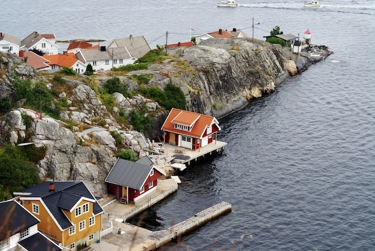
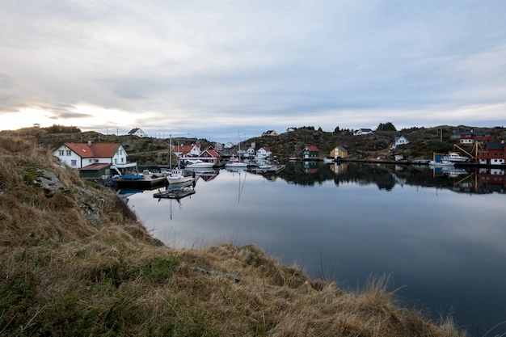
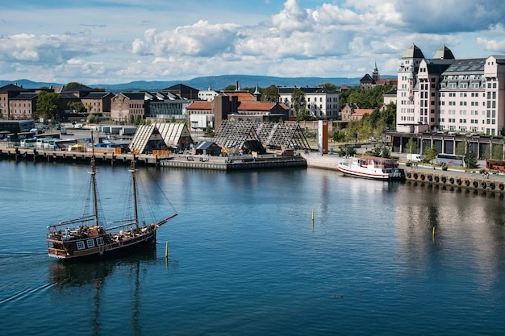
«Built on experience. Growing through expertise.»
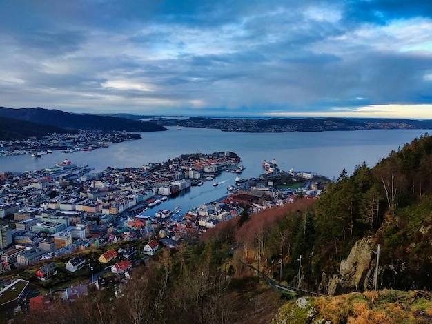
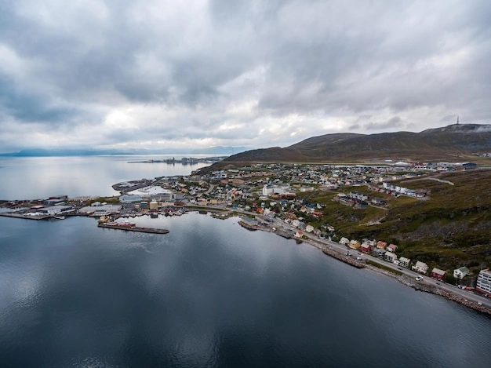
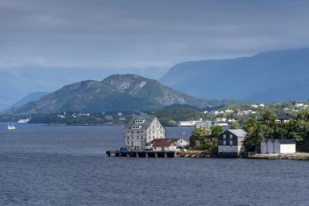
«Let's solve what comes next»
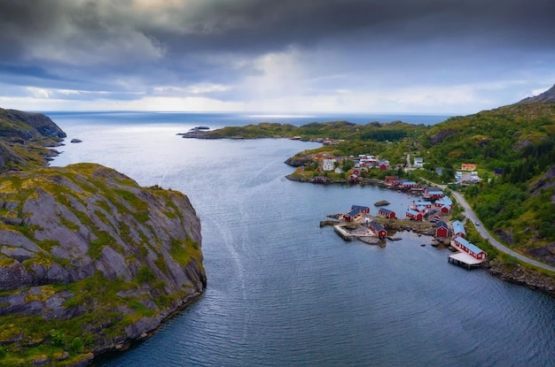
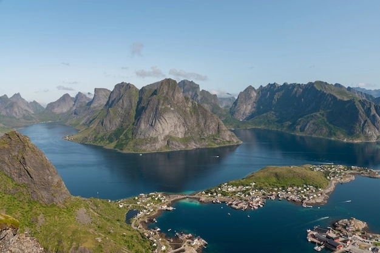
«Your projects already have enough complexity»
Строительные кадры сняты по вашему указанию. Вместо них рабочая среда IT: ряд рабочих мест вдоль одного стола — прямое прочтение «одно общее рабочее пространство».
«Enterprise AI without enterprise paralysis»
Почти весь сток про ИИ — синее свечение и «мозги в проводах», это прямо запрещено брифом. Осталось два кадра с нормальным светом.
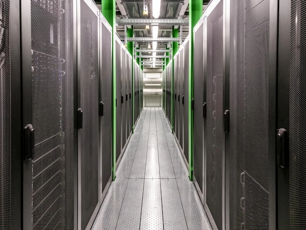
NOVA for Salesforce и AI & Product Development
Вот с этими двумя честно плохо. Их предмет — софт, а фотография софта в стоке сводится к «код на экране». Такой кадр ничего не сообщает, но хотя бы не врёт. Три варианта на обе страницы — или скажите, и я оставлю на этих двух иллюстрации, а фотографии поставлю на остальные пять.
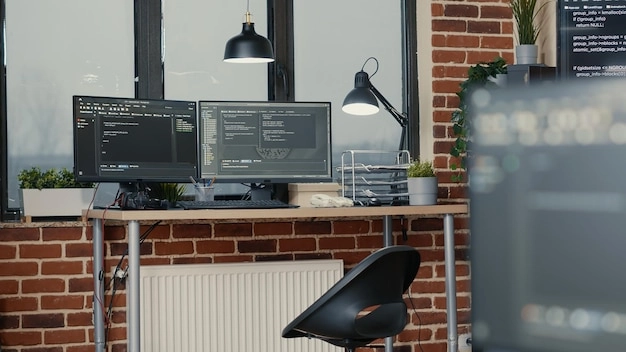
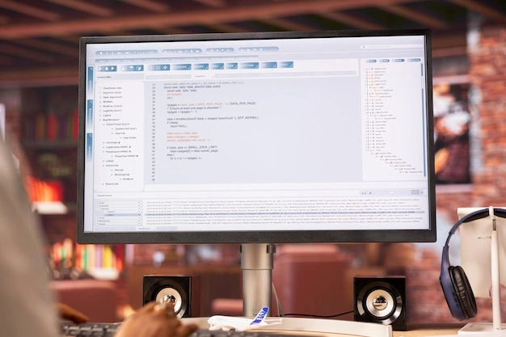
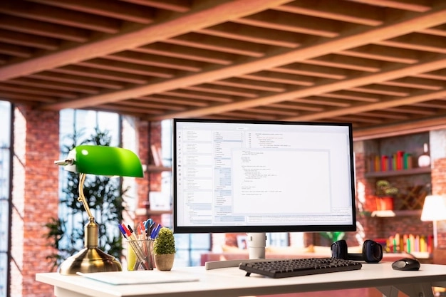
Герой Why us и WorkHub → The problem

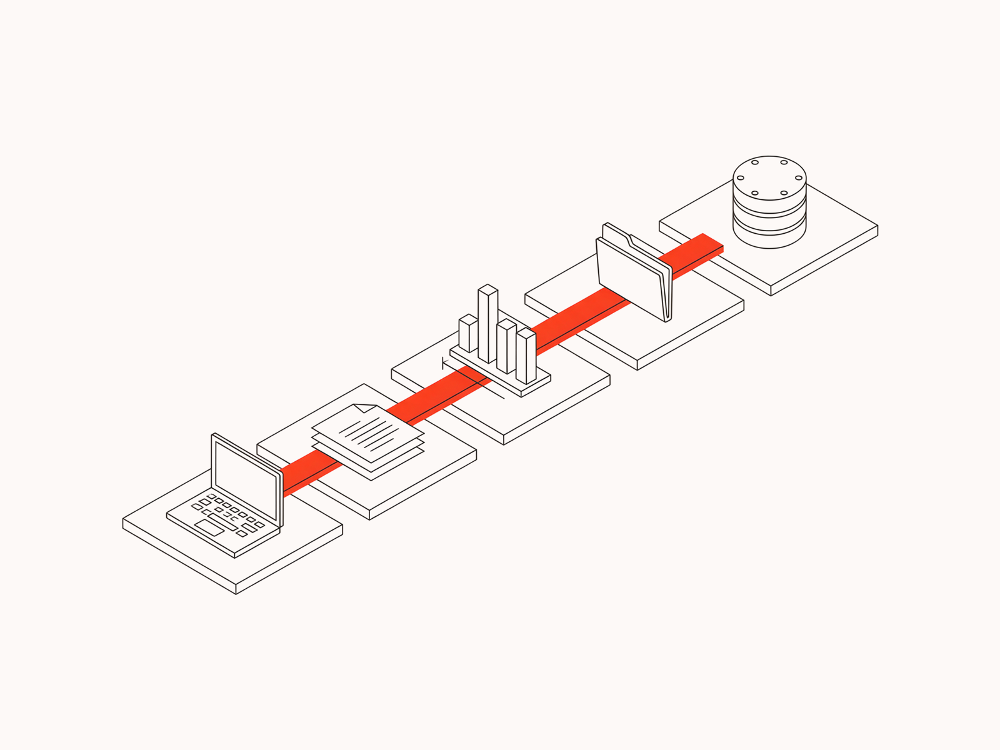
Что остаётся иллюстрациями
Если это тоже надо перевести в фотографии — скажите, но пока я их не трогаю: это схемы, а не «картинка для настроения». Полосы трёх продуктов на Products, герой и Expertise на NOVA, «до / после» на WorkHub, герой и External access на WorkHub — те, что вы только что выбрали.